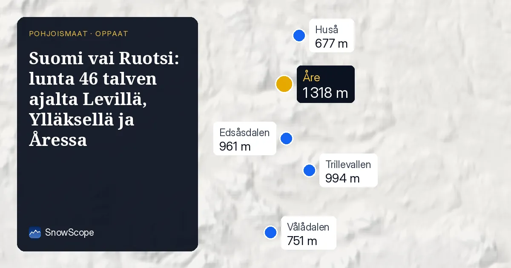

Suomi vai Ruotsi: lunta 46 talven ajalta Levillä, Ylläksellä ja Åressa
Suomen Lappi ja Ruotsin tunturit lupaavat saman: pitkän, valkoisen ja varman talven. 46 menneen talven (1980-81 – 2025-26) lumihistoria kahdeksassa hiihtokeskuksessa näyttää, että ne pitävät lupauksensa hyvin eri tavoin. Lappi on matala mutta tasainen. Ruotsi on korkeampi ja pohjoisessa paljon lumisempi, mutta sen eteläiset keskukset ovat menettäneet lunta.
Katso kohteen Åre lumiennuste reaaliajassa SnowScope-sovelluksessaLumensyvyys, puuterihälytykset ja 3D-kartta, ilmaiseksi.

Tilanne 23. marraskuuta 2026
Rinteiden yläosissa lunta on Sälenissä 31 cm, Rukalla 25 cm, Åressa ja Hemavanissa 21 cm, Pyhä-Luostolla 17 cm, Idre Fjällissä 9 cm, Ylläksellä 8 cm ja Levillä 7 cm. Åreen on satanut 5 cm uutta lunta viimeisen 7 päivän aikana.
Tavalliseen marraskuuhun verrattuna Sälen (9 cm) ja Ruka (15 cm) ovat edellä. Levi ja Ylläs, joissa marraskuussa on tavallisesti 20 cm, ovat jäljessä, ja Hemavan on selvästi jäljessä tavallisesta 68 cm:stä huipulla. Ohut alku ei kuitenkaan kerro talvesta paljon: Lapissa syvimmät viikot tulevat helmi- ja maaliskuussa, ja historia näyttää, kuinka varmasti ne tulevat.
Lappi: matalat tunturit, tasainen lumi
Suomen tunturit ovat Alppeihin verrattuna pieniä. Levin huippu on 530 m, Ylläksen 717 m, Rukan 494 m ja Pyhä-Luoston 489 m. Korkeuden puutteen ne korvaavat kylmyydellä. Talven tavallinen huippu on Levillä 78 cm, Ylläksellä 81 cm, Pyhä-Luostolla 76 cm ja Rukalla 74 cm.
Silmiinpistävintä on alaraja. 46 talven niukimpanakin talvena Levin huippu oli 60 cm ja Ylläksen 63 cm. Runsaimpina talvina päästiin 111 cm:iin ja 108 cm:iin. Lunta on maassa noin 209 päivää vuodessa Levillä ja Ylläksellä ja 204 päivää Rukalla ja Pyhä-Luostolla, noin 19.–21. lokakuuta noin 20. toukokuuta asti.
Ruotsi: kaksi maata yhdessä
Kaukana pohjoisessa Hemavan on omaa luokkaansa. Huipulla (1136 m) tavallinen huippu on 234 cm, köyhimmän talven 160 cm:stä runsaimman 350 cm:iin. Lumi tulee noin 25. syyskuuta ja pysyy noin 27. kesäkuuta asti, tavallisena vuonna 265 päivää. Åre, maan suurin hiihtoalue, saa huipulleen (1318 m) 115 cm ja lunta on 216 päivää.
Etelämpänä Sälen ja Idre Fjäll muistuttavat lumensyvyydeltään paljon enemmän Lappia: Sälenissä tavallinen huippu on 76 cm ja Idre Fjällin huipulla 82 cm. Kausi on kuitenkin lyhyempi, Sälenissä 180 päivää ja Idren huipulla 199, ja ero huonon ja hyvän talven välillä on suurempi: Sälenissä 38 cm:stä 120 cm:iin.
Kuka menettää lunta
Vertasimme aineiston 15 ensimmäistä talvea 15 viimeiseen. Lapissa tavallinen huippu on tuskin muuttunut: Levi 77 cm ja sitten 79 cm, Ylläs 81 cm ja 83 cm, Ruka 74 cm ja 75 cm, Pyhä-Luosto 80 cm ja 78 cm. Myös Hemavanin huippu on pysynyt, 237 cm ja 244 cm.
Etelä-Ruotsi ja matalat rinteet kertovat toista. Sälen putosi 88 cm:stä 72 cm:iin, Idre Fjällin huippu 85 cm:stä 73 cm:iin ja Åren alaosa 100 cm:stä 76 cm:iin, kun huippu laski 121 cm:stä 113 cm:iin. Myös kausi on lyhentynyt: Sälenissä 191 lumipäivästä 173:een, Åren huipulla 230:stä 203:een.
Viime talvi (2025-26) sopii kuvaan. Sälenin huippu oli 54 cm ja Åren alaosan 57 cm, kun Levi ylsi tavalliseen 78 cm:iinsä.
Kuukausi kuukaudelta: milloin kukin on parhaimmillaan
Joulukuu on ohut lähes kaikkialla: tavallinen syvyys on Levillä 39 cm, Ylläksellä 40 cm, Rukalla 36 cm, Åren huipulla 49 cm ja Sälenissä 28 cm. Poikkeus on Hemavan, jonka huipulla on 115 cm. Tammikuussa Levillä on 55 cm, Ylläksellä 57 cm, Åren huipulla 76 cm ja Sälenissä 48 cm.
Maaliskuu on syvin kuukausi melkein kaikkialla: Levillä 66 cm, Ylläksellä 69 cm, Åren huipulla 94 cm, Sälenissä 62 cm ja Hemavanin huipulla 207 cm. Hemavan pysyy syvänä huhtikuulle, 213 cm.
Varmuudessa erot ovat suurimmat. Kun lasketaan viikot, joilla on vähintään 50 cm yhdeksänä talvena kymmenestä, Hemavanin huipulla niitä on 27, Ylläksellä 11, Åren huipulla 10, Levillä 9 ja Rukalla 5. Sälenissä ei yhtään: sen paras viikkokin, viikko 8, sai 50 cm vain 80 %:na talvista.
Miten valita
Jouluun tai tammikuun alkuun korkeus ja leveysaste ratkaisevat: Hemavan tai Åren yläosa. Lapissa joulukuun lumi on ohuempaa, mutta pakkanen pitää sen, joten se sopii perheille, jotka laskevat rinteissä. Sälen joulukuussa on uhkapeliä: joka kymmenes joulukuu tavallinen syvyys on 9 cm tai vähemmän.
Varmaan helmikuun viikkoon Lappia on vaikea voittaa: Levin paras viikko on viikko 7, jolloin 50 cm on ollut 98 %:na talvista. Huhtikuun kevätlaskuihin kannattaa mennä pohjoiseen ja korkealle, Hemavaniin tai Åren huipulle, jossa huhtikuun tavallinen syvyys on yhä 93 cm.
Vinkkejä laskijoille
- Varaa joulukuun matkat korkealle tai kauas pohjoiseen: Hemavanissa ja Åren yläosissa on eniten alkukauden lunta.
- Lapissa suunnittele matka helmi- ja maaliskuulle, jolloin Levi ja Ylläs ovat syvimmillään ja varmimmillaan.
- Sälenissä ja Idre Fjällissä pidä päivät joustavina ennen tammikuun puoliväliä; talvet vaihtelevat paljon.
- Katso lumikartta viikkoa ennen matkaa; alkukauden syvyydet muuttuvat nopeasti.
- Ruotsin tuntureilla rinteiden ulkopuolella lue ensin virallinen lumivyöryennuste.
Näistä luvuista
Lumiluvut: SnowScopen lumihistoria, 46 aiempaa talvea (1980-81–2025-26) keskuksen kolmella korkeudella (arvio alueelle, ei keskuksen omia raportteja). Hissit, rinteet ja matkat: alla luetellut lähteet, tarkistettu näytettynä päivänä.
Viralliset lumivyöryennusteet: Lavinprognoser (Naturvårdsverket)
Viittaa tähän raporttiin
Tutkimukseen, opetukseen tai mediaan: luvut ja kaaviot ovat vapaasti käytettävissä CC BY 4.0 -lisenssillä tällä lähdeviitteellä.
SnowScope (2026), Suomi vai Ruotsi: lunta 46 talven ajalta Levillä, Ylläksellä ja Åressa, https://snowscope.app/blog/fi/2026/11/finland-vs-sweden-ski-snow-46-winters-levi-yllas-are-hemavan.html, luettu 2026-11-24
SnowScope (Atlas Labs). (2026, November 24). Suomi vai Ruotsi: lunta 46 talven ajalta Levillä, Ylläksellä ja Åressa. SnowScope snow reports. https://snowscope.app/blog/fi/2026/11/finland-vs-sweden-ski-snow-46-winters-levi-yllas-are-hemavan.html
BibTeX
@misc{snowscope2026finlandvsswedenskisnow46,
author = {{SnowScope (Atlas Labs)}},
title = {Suomi vai Ruotsi: lunta 46 talven ajalta Levillä, Ylläksellä ja Åressa},
year = {2026},
month = nov,
howpublished = {\url{https://snowscope.app/blog/fi/2026/11/finland-vs-sweden-ski-snow-46-winters-levi-yllas-are-hemavan.html}},
note = {Published 2026-11-24 10:02 UTC; accessed 2026-11-24}
}· CC BY 4.0 · Menetelmät, data ja työkalut →
Åre: lumi ja lämpötila korkeuden mukaan, tämä talvi ja viime talvi (työkalut) →
Seuraa: Åre
Ilmainen: viesti, kun uutta lunta on tulossa, ja ennuste joka aamu.